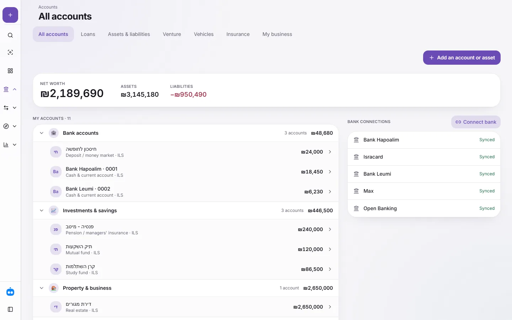
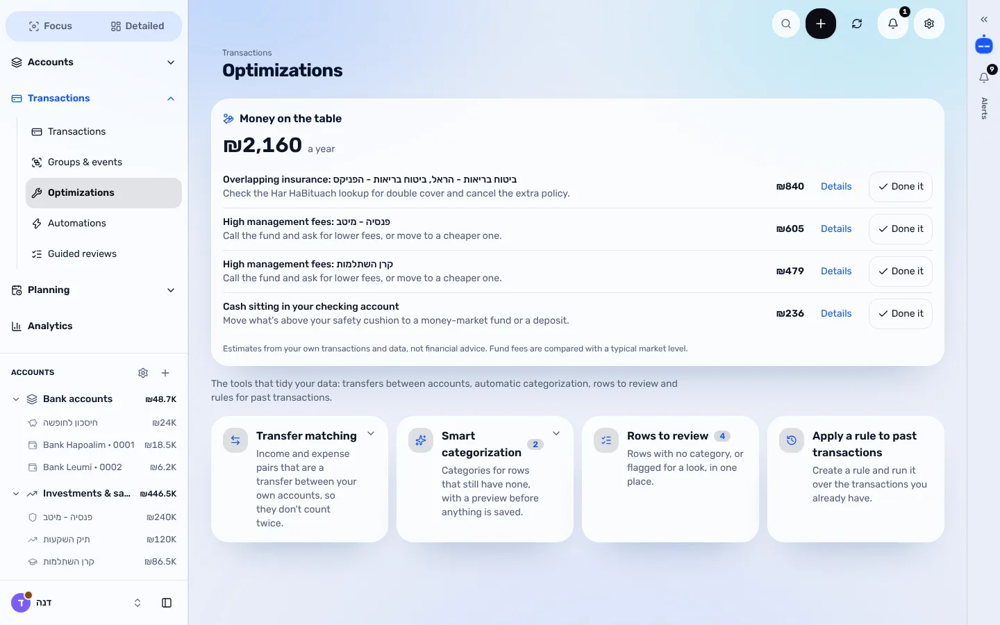
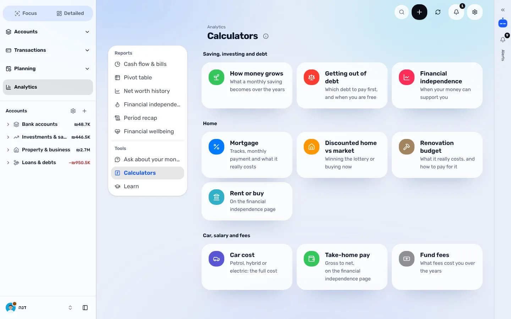

Pension, study fund and provident fund, next to everyday money.
Long-term savings stop being a letter once a year. Balances sync on their own, fees are checked against the market, and all of it counts toward the household's net worth.
Balances synced from eight houses
Connect your pension provider or investment house once, and the balance updates on its own.
- Altshuler Shaham New
- Phoenix New
- Excellence Trade New
- Clal
- Harel
- Meitav
- Menora
- Migdal


Import your agent's report
A periodic report from an agent or advisor is imported as a JSON file.
- Each product lands in assets, valued as of the report date
- Its management fees and monthly deposit are stored with it
- Each policy in the report lands in insurance
- Importing the same report again updates it instead of duplicating
Your fees against the market
Penny compares your management fees with what is usual in the market. Anything too high shows up in "Money on the table", with the yearly amount and the next step.


Tools for pension decisions
Calculators and guided tools, each marked with the year its figures are valid for.
- Choosing an investment track
- Annuity versus lump sum
- Severance when changing jobs
- An early-retirement bridge to 67
- Deposits that earn a tax benefit


Good to know
- Penny does not read PDF agent reports. Any tool that extracts the data to JSON in the example's shape works.
- Reading the pension clearing-house report automatically is still on the roadmap. For now the app has a guide to reading it.
- Calculators give estimates, not pension advice.
- The report is read and stored on your computer, and none of it leaves.
Questions and answers
Which houses do balances sync from?
Altshuler Shaham, Phoenix, Excellence Trade, Clal, Harel, Meitav, Menora and Migdal.
Mine isn't listed. What now?
Import your agent's report as a JSON file, and the products land in assets with their value, fees and deposits. The file format.
Does Penny read the pension clearing-house report?
Not yet. It is on the roadmap. Today you can import your agent's report, and there is a guide to reading the clearing-house one.
Is this pension advice?
No. Penny shows your own data and gives estimates. It is not a licensed service and does not replace an advisor.
See it with a sample household first.
The online version is the full app, running in your browser, with a year of made-up transactions, budgets, pension and goals. No signup, and nothing reaches a bank, an AI provider or Telegram.